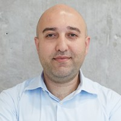

Meet the experts leading this innovative underwater maritime monitoring project
Research leaders driving innovation and scientific excellence

Principal Investigator · Director, Robotics Lab
Dubai Future Labs, Dubai Future Foundation
Dr. Taha oversees the applied research and technology validation components, ensuring seamless translation from research to practical implementation.
Principal Investigator
Khalifa University of Science and Technology
Dr. Hussain leads the fundamental research and algorithm development aspects, focusing on advanced robotics and autonomous system technologies.
Core team members driving the project forward
Principal Robotics Engineer
Dubai Future Labs, Dubai Future Foundation
Provides technical leadership on robotic platform development, guiding the design and integration of the ROV and USV systems from prototype to field deployment.
Senior Robotics Engineer
Dubai Future Labs, Dubai Future Foundation
Develops and integrates the robotic software and hardware stack, supporting platform testing and marine trials in UAE waters.
Senior Mechatronics Engineer
Dubai Future Labs, Dubai Future Foundation
Leads mechatronic design and hardware prototyping, covering the mechanical, electrical and waterproofing aspects of the marine platforms.
Senior Perception Engineer
Dubai Future Labs, Dubai Future Foundation
Works on perception systems for the marine platforms, including sensor integration and onboard processing for real-world operation.
Associate Manager
Dubai Future Labs, Dubai Future Foundation
Supports the management and coordination of the project, aligning activities with Dubai Future Foundation's programmes and stakeholders.
Technical Project Manager
Dubai Future Labs, Dubai Future Foundation
Coordinates all project activities, manages timelines and deliverables, and ensures effective communication between all stakeholders and team members across both institutions.
Post Doctoral Researcher Marine vision
Khalifa University of Science and Technology
Dr. Alawode is a marine vision expert working on visual perception for underwater and surface robots, including visual object tracking in degraded imagery, underwater image enhancement and large-scale maritime benchmark datasets.
Post Doctoral Researcher Maritime robotics
Khalifa University of Science and Technology
Leading research in maritime robotics, specializing in the development of robust underwater platforms, scalable multi-agent systems, and real-world deployment of autonomous marine vehicles.
Researcher Marine robotics & control
Khalifa University of Science and Technology
Dr. Akram contributes expertise in marine systems, control algorithms and autonomous vehicle technologies, including fault-tolerant thrust allocation for underwater vehicles and path-following control for USVs.
Research Associate Computer Vision
Khalifa University of Science and Technology
Drives the development of advanced computer vision algorithms tailored for challenging underwater conditions, focusing on enhancement techniques and real-time visual perception.
Phd Student ROV control
Khalifa University of Science and Technology
Research focus is on developing robust and adaptive control architectures for Remotely Operated Vehicles, ensuring stability and precise maneuverability in dynamic underwater conditions.
Phd Student ROV localization
Khalifa University of Science and Technology
Dedicated to solving complex localization challenges underwater, developing sensor fusion algorithms and simultaneous localization and mapping (SLAM) techniques for ROVs.
Phd Student Underwater vision
Khalifa University of Science and Technology
Investigating advanced machine learning approaches for underwater scene understanding, object detection, and tracking in low-visibility marine environments.